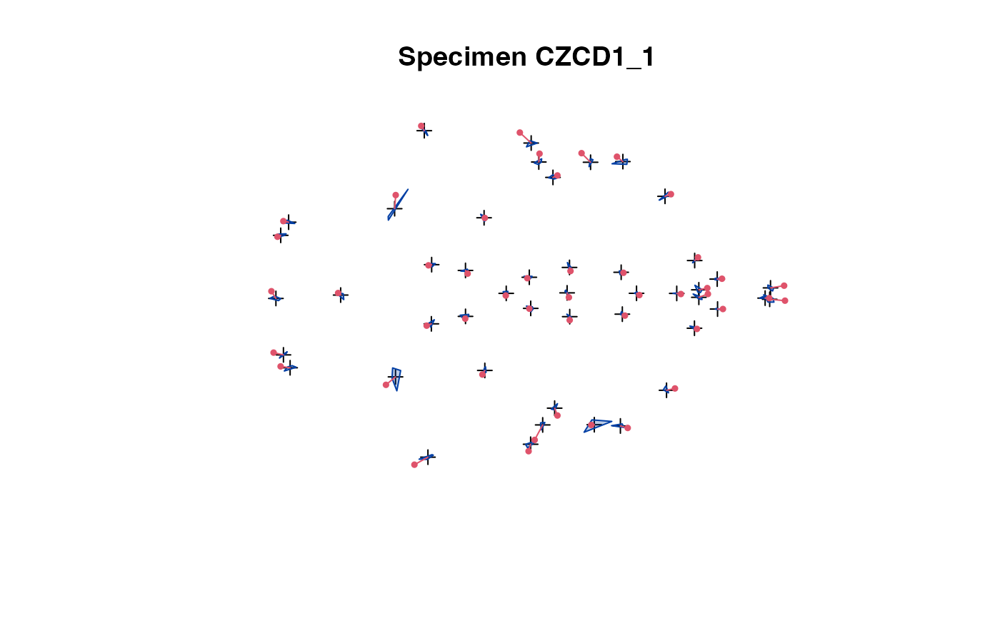
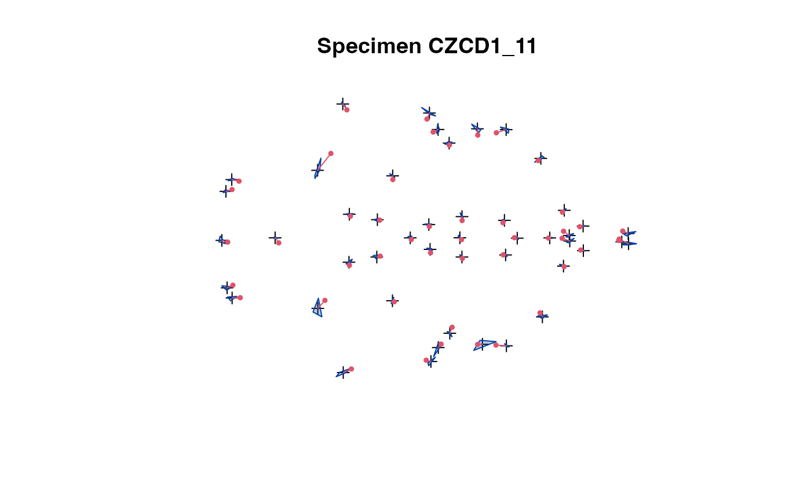

Functions for EDMA data objects
edma_data.RdFunctions for reading, simulating, and manipulating EDMA data.
## read xyz files
read_xyz(file, ...)
## write xyz files
write_xyz(x, file)
## data generation
edma_simulate_data(n, M, SigmaK)
## print
# S3 method for edma_data
print(x, truncate=40, ...)
## accessors
# S3 method for edma_data
dim(x)
# S3 method for edma_data
dimnames(x)
landmarks(x, ...)
dimensions(x, ...)
specimens(x, ...)
# S3 method for edma_data
landmarks(x, ...)
# S3 method for edma_data
dimensions(x, ...)
# S3 method for edma_data
specimens(x, ...)
landmarks(x) <- value
dimensions(x) <- value
specimens(x) <- value
## subsetting
# S3 method for edma_data
subset(x, subset, ...)
# S3 method for edma_data
[(x, i, j, k)
## coercion
# S3 method for edma_data
stack(x, ...)
# S3 method for edma_data
as.matrix(x, ...)
# S3 method for edma_data
as.data.frame(x, ...)
# S3 method for edma_data
as.array(x, ...)
as.edma_data(x, ...)
# S3 method for array
as.edma_data(x, ...)
combine_data(a, b,
ga="G1", gb="G2")
combine_data4(a1, a2, b1, b2,
ga1="A1", ga2="A2", gb1="B1", gb2="B2")
## plot methods
plot_2d(x, ...)
plot_ord(x, ...)
plot_clust(x, ...)
# S3 method for edma_data
plot(x, which=NULL,
ask=dev.interactive(), ...)
# S3 method for edma_data
plot_2d(x, which=NULL, ...)
# S3 method for edma_data
plot_ord(x, ...)
# S3 method for edma_data
plot_clust(x, ...)
## dissimilarities
# S3 method for edma_data
as.dist(m, diag=FALSE, upper=FALSE)
Arguments
| file | the name of the file which the data are to be read from, or written to,
see |
|---|---|
| x, m | an EDMA data object of class 'edma_data'. |
| which | if a subset of the specimens is required. |
| value | a possible value for |
| ask | logical, if |
| subset, i, j, k | subset is for subsetting specimens (e.g. for bootstrap). [i, j, k] indices refer to [landmarks, dimensions, specimens]. |
| n, M, SigmaK | number of specimens (n), mean form matrix (M, K x D), variance-covariance matrix (K x K symmetric). |
| truncate | numeric, number of characters to print for the object title. |
| diag, upper | logical, indicating whether the diagonal
and the upper triangle of the distance matrix should be printed.
See |
| a, b, a1, a2, b1, b2 | EDMA data objects to be combined together. Landmarks must be homologous (determined by dimension names). |
| ga, gb, ga1, ga2, gb1, gb2 | character, group names that are prepended to the specimen names to differentiate the groups. |
| ... | other arguments passed to methods.
For |
Details
The xyz landmark data has the following structure, see Examples:
- Header: this is the description of the data.
- XYZ: indicates dimensions, XYZ means 3D landmark data.
- 42L 3 9: dimensions, e.g. 42 landmarks (K), 3 dimensions (D), 9 specimens (n).
- Landmark names, separated by space.
- The stacked data of landmark coordinates, e.g. 3 columns, space separated numeric values with K*n rows, the K landmarks per individuals stacked n times.
- Blank line.
- Date on of scans for each specimen (n rows), this part is also used to get specimen IDs.
After reading in or simulating and EDMA data object, the methods help extracting info, or manipulate these objects. See Values and Examples.
The EDMA data object (class 'edma_data') is a list with two
elements: $name is the data set name (header information from
the .xyz file), $data is a list of n matrices (the list can be
named if speciemen information is present),
each matrix is of dimension K x D, dimension names for the
matrices describing landmark names and coordinate names.
Value
edma_simulate_data returns an EDMA data object of
class 'edma_data'.
The dim returns the number of landmarks (K), dimensions (D),
and specimens (n) in a data object.
landmarks, dimensions, and specimens
are dimensions names, dimnames returns these as a list.
Landmark names and dimensions are used to check
if landmarks are homogeneous among objects.
It is possible to set the dimansion names as
dimnames(x) <- value where value is the
new value for the name.
The print method prints info about the data object.
The methods stack and as.matrix return a stacked
2D array (K*n x D) with the landmark coordinates,
as.data.frame turns the same 2D stacked array into a data frame,
as.array returns a 3D array (K x D x n).
as.edma_data turns a 3D array to an EDMA data object,
this is useful to handle 3D array objects returned by many
functions of the geomorph package (i.e. after reding
Morphologika, NTS, TPS files).
combine_data and combine_data4 combines
2 or 4 EDMA data sets together, landmarks must be homologous.
as.dist calculates the dissimilarity matrix (n x n, object
of class 'dist', see dist) containing
pairwise dissimilarities among the specimens.
Dissimilarity is based on the T-statistic (max/min distance)
averaged (so that it is symmetric) and on the log scale
(so that self dissimilarity is 0).
subset and [i,j,k] returns an EDMA data object
with the desired dimensions or permutations. See Examples.
plot and plot_2d produces a series of plots
as a side effect, returning the data object invisibly.
The functions provide diagnostics for each specimen
or just the specimen selected by the which argument.
The 2D projection is used in case of 3D landmark data.
The convex hull of the specimens (excluding the one being
selected) is compared with the actual specimen's landmarks.
This allows easy spotting of erroneous data.
The plot_ord and plot_clust are based on the
dissimilarities among specimens and provide ordination
(metric multidimensional scaling using cmdscale
based on square rooted dissimilarities and Cailliez's correction).
and hierarchical cluster dendrogram (using the hclust
function with Ward's clustering method).
Author
Peter Solymos
See also
plot.edma_data for visualizing EDMA data objects.
edma_fit for EDMA analysis.
dist for dissimilarity matrices and
T_test for description of the T-statistic.
Examples
## read xyz files file <- system.file( "extdata/crouzon/Crouzon_P0_Global_MUT.xyz", package="EDMAinR") x <- read_xyz(file) x#> EDMA data: Crouzon P0 MUT #> 47 landmarks, 3 dimensions, 28 specimens## test writing xyz file f <- tempfile(fileext = ".xyz") write_xyz(x, file=f) tmp <- read_xyz(file=f) stopifnot(identical(dimnames(x), dimnames(tmp))) unlink(f) ## the orignal structure l <- readLines(file) cat(l[1:10], sep="\n")#> Crouzon P0 MUT #> XYZ #> 47L 3 28 #> amsph bas cpsh ethma ethmp laalf lasph lflac lnsla lnslp locc loci lpalf lpfl lpmx lpns lpsh lpsq lpto lptyp lsqu lsyn lzya lzygo lzyt opi raalf rasph rflac rmaxi rnsla rnslp rocc roci rpalf rpfl rpmx rpns rpsh rpsq rpto rptyp rsqu rsyn rzya rzygo rzyt #> 5.85485 5.98171 2.2017 #> 2.79418 6.2371 0.400282 #> 6.85584 5.80958 3.3537 #> 9.10866 5.82195 3.91282 #> 8.2508 5.81294 3.77622 #> 10.0935 6.17677 3.65059#> CZCD1_37 Scanned on 010511 #> CZCD1_39 Scanned on 010511 #> CZCD1_40 Scanned on 010511 #> CZCD1_42 Scanned on 010511 #> CZCD1_53 Scanned on 122310 #> CZCD1_56 Scanned on 122310 #> CZCD1_59 Scanned on 122310 #> CZCD1_65 Scanned on 010511 #> CZCD1_66 Scanned on 010511 #> CZCD1_72 Scanned on 010311 #> CZCD1_73 Scanned on 010311plot_2d(x) # all speciemns in 1 plotplot_2d(x, which=2) # show specimen #2plot_ord(x)plot_clust(x)#> [1] 47 3 28#> [[1]] #> [1] "amsph" "bas" "cpsh" "ethma" "ethmp" "laalf" "lasph" "lflac" "lnsla" #> [10] "lnslp" "locc" "loci" "lpalf" "lpfl" "lpmx" "lpns" "lpsh" "lpsq" #> [19] "lpto" "lptyp" "lsqu" "lsyn" "lzya" "lzygo" "lzyt" "opi" "raalf" #> [28] "rasph" "rflac" "rmaxi" "rnsla" "rnslp" "rocc" "roci" "rpalf" "rpfl" #> [37] "rpmx" "rpns" "rpsh" "rpsq" "rpto" "rptyp" "rsqu" "rsyn" "rzya" #> [46] "rzygo" "rzyt" #> #> [[2]] #> [1] "X" "Y" "Z" #> #> [[3]] #> [1] "CZCD1_1" "CZCD1_2" "CZCD1_7" "CZCD1_10" "CZCD1_11" "CZCD1_15" #> [7] "CZCD1_16" "CZCD1_18" "CZCD1_20" "CZCD1_21" "CZCD1_23" "CZCD1_24" #> [13] "CZCD1_25" "CZCD1_28" "CZCD1_30" "CZCD1_32" "CZCD1_36" "CZCD1_37" #> [19] "CZCD1_39" "CZCD1_40" "CZCD1_42" "CZCD1_53" "CZCD1_56" "CZCD1_59" #> [25] "CZCD1_65" "CZCD1_66" "CZCD1_72" "CZCD1_73" #>landmarks(x)#> [1] "amsph" "bas" "cpsh" "ethma" "ethmp" "laalf" "lasph" "lflac" "lnsla" #> [10] "lnslp" "locc" "loci" "lpalf" "lpfl" "lpmx" "lpns" "lpsh" "lpsq" #> [19] "lpto" "lptyp" "lsqu" "lsyn" "lzya" "lzygo" "lzyt" "opi" "raalf" #> [28] "rasph" "rflac" "rmaxi" "rnsla" "rnslp" "rocc" "roci" "rpalf" "rpfl" #> [37] "rpmx" "rpns" "rpsh" "rpsq" "rpto" "rptyp" "rsqu" "rsyn" "rzya" #> [46] "rzygo" "rzyt"specimens(x)#> [1] "CZCD1_1" "CZCD1_2" "CZCD1_7" "CZCD1_10" "CZCD1_11" "CZCD1_15" #> [7] "CZCD1_16" "CZCD1_18" "CZCD1_20" "CZCD1_21" "CZCD1_23" "CZCD1_24" #> [13] "CZCD1_25" "CZCD1_28" "CZCD1_30" "CZCD1_32" "CZCD1_36" "CZCD1_37" #> [19] "CZCD1_39" "CZCD1_40" "CZCD1_42" "CZCD1_53" "CZCD1_56" "CZCD1_59" #> [25] "CZCD1_65" "CZCD1_66" "CZCD1_72" "CZCD1_73"dimensions(x)#> [1] "X" "Y" "Z"## subsets x[1:10, 2:3, 1:5]#> EDMA data: Crouzon P0 MUT #> 10 landmarks, 2 dimensions, 5 specimens#> EDMA data: Crouzon P0 MUT #> 47 landmarks, 3 dimensions, 10 specimens#> num [1:1316, 1:3] 5.85 2.79 6.86 9.11 8.25 ... #> - attr(*, "dimnames")=List of 2 #> ..$ : chr [1:1316] "CZCD1_1_amsph" "CZCD1_1_bas" "CZCD1_1_cpsh" "CZCD1_1_ethma" ... #> ..$ : chr [1:3] "X" "Y" "Z"#> 'data.frame': 1316 obs. of 3 variables: #> $ X: num 5.85 2.79 6.86 9.11 8.25 ... #> $ Y: num 5.98 6.24 5.81 5.82 5.81 ... #> $ Z: num 2.2 0.4 3.35 3.91 3.78 ...#> num [1:1316, 1:3] 5.85 2.79 6.86 9.11 8.25 ... #> - attr(*, "dimnames")=List of 2 #> ..$ : chr [1:1316] "CZCD1_1_amsph" "CZCD1_1_bas" "CZCD1_1_cpsh" "CZCD1_1_ethma" ... #> ..$ : chr [1:3] "X" "Y" "Z"#> num [1:47, 1:3, 1:28] 5.85 2.79 6.86 9.11 8.25 ... #> - attr(*, "dimnames")=List of 3 #> ..$ : chr [1:47] "amsph" "bas" "cpsh" "ethma" ... #> ..$ : chr [1:3] "X" "Y" "Z" #> ..$ : chr [1:28] "CZCD1_1" "CZCD1_2" "CZCD1_7" "CZCD1_10" ...#> EDMA data: Landmark data #> 47 landmarks, 3 dimensions, 28 specimens## simulate data K <- 3 # number of landmarks D <- 2 # dimension, 2 or 3 sig <- 0.75 rho <- 0 SigmaK <- sig^2*diag(1, K, K) + sig^2*rho*(1-diag(1, K, K)) M <- matrix(c(0,1,0,0,0,1), 3, 2) M[,1] <- M[,1] - mean(M[,1]) M[,2] <- M[,2] - mean(M[,2]) M <- 10*M edma_simulate_data(10, M, SigmaK)#> EDMA data: Simulated landmark data #> 3 landmarks, 2 dimensions, 10 specimens